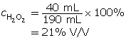
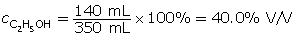
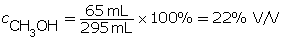
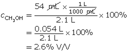
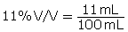

Module 4—Properties of Solutions
 Explore
Explore
 Read
Read
Many terms are used to describe the concentration of a solution. A powdered drink mix added to a large quantity of water is called a dilute solution, whereas a powdered drink mix added to a small quantity of water is considered to be a concentrated solution.
Dilute and concentrated are qualitative terms that only have meaning in the context of comparing similar solutions. Saying a solution is dilute provides no information about the specific quantities of solute and solvent.
Concentration is defined as the ratio of the quantities of solute to the total solution. This ratio can be written in a variety of ways. As you progress through your exploration of solution chemistry, you will encounter concentrations in many different forms. These forms of showing concentration will be important when you study the maximum allowable concentrations of contaminants in drinking water.
Percentage Concentrations
The next time you pick up a container, look at the label. Chances are that the liquid inside is a solution, and the label will express the concentration of a component. What might surprise you is that a variety of means to express concentration is used. In this section you will learn about the most common methods for expressing the concentration for commercial and other purposes.
Percentage Volume per Volume (% V/V)
Read and carefully work through “COMMUNICATION example 1” on page 203 in your textbook.
After you have completed your reading, work through the following example, followed by the Self-Check problems below.
Example 1: 40 mL of hydrogen peroxide is poured into 150 mL of water. Determine the % V/V concentration of this solution.
This question is different since the water volume is given instead of the total solution volume. It’s easy to get the solution volume. It is 40 mL + 150 mL = 190 mL.
Now, divide the volume of hydrogen peroxide by the total volume of the solution.

 Self-Check
Self-Check
SC 1. A 350-mL solution contains 140 mL of ethanol. Determine the % V/V concentration of this solution.
SC 2. A 450-mL solution contains 160 mL of liquid hydrogen peroxide. Determine the % V/V concentration of this solution.
SC 3. 65 mL of methanol is poured into 230 mL of water. Determine the % V/V concentration of this solution.
SC 4. A 2.1-L solution contains 54 mL of methanol. Determine the % V/V concentration of this solution.
SC 5. A vinegar solution contains acetic acid in water and is labelled 11% V/V. Express this concentration as mL per 100 mL of solution.
Self-Check Answers
SC 1.

SC 2.

SC 3. Remember, you must use the total volume of the solution (65 mL + 230 mL = 295 mL).

SC 4. Remember, the volumes need to be expressed in the same units.

SC 5.
